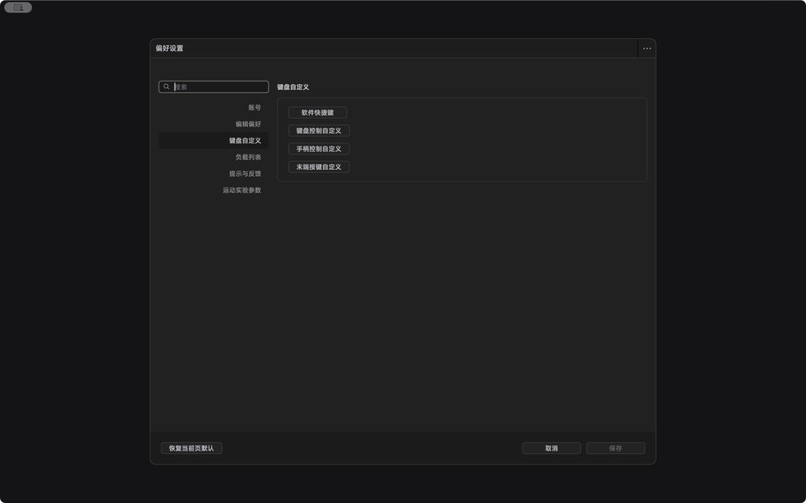

Features in detail / Preferences: tune it to the way you work
Preferences: tune it to the way you work
Tune the defaults to the way you work; save and it takes effect.
Six categoriesAccount, editing, keyboard, payload, alerts and motion parameters.
Editing defaultsDisplay scale, default motion type and auto-append timing are yours to set.
Curve algorithmPick the speed-curve algorithm new timelines start with.
Payload listKeep the loads you use and pick one next time.
Alerts and vibrationError sounds and gamepad vibration, on or off as you like.
Locked while runningSettings lock during motion so nothing changes under you.

Describes CineArm v0.1.49.